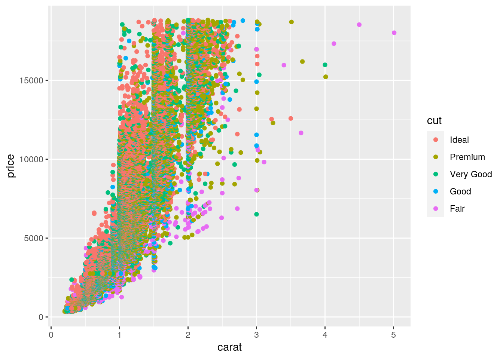

As a biology nerd also interested in sociology, I joined the UT Austin Bridging Disciplines Social Inequality, Health, and Policy certificate program.
This allowed me to take my natural science courses but also learn about social science and the economic, societal, and educational disparities that exist in United States populations and across the world.
In my computational biology course, I learned not only how to code using the R language, but I was able to use my learned skills to analyze, model, test, and predict various population statistics and the role carbon dioxide emissions plays in them.
Dental public health is, in short, population-based dentistry. It is the branch that prioritizes oral health promotion, disease prevention, and health policy advocacy. I had the opporunity to work with Jack Sansing Dental Clinic, a safe space for patients affected by HIV and AIDS to recieve dental treatment, education, and resources, solidifying my passion for this field.
Now, I hope to use some of the skills (shown below) I learned in Python to continue the kind of research linked above in my future career as a dentist in public health!
import pandas as pd
quakes=pd.read_csv("https://vincentarelbundock.github.io/Rdatasets/csv/datasets/quakes.csv",index_col=0)
print(quakes.shape)## (1000, 5)import numpy as np
print(np.mean(quakes.mag))## 4.6204print(quakes.mag.max())## 6.4print(quakes.mag.min())## 4.0print(quakes.mag.median())## 4.6.shape tells me how many observations/rows and columns this dataset contains, respectively.
numpy allows me to perform arithmetic functions like mean, max, min, and median on arrays.
string="I cannot wait for this pandemic to be over!"
def count_words(sentence):
counts = {}
for c in sentence:
if c in counts:
counts[c]+=1
else:
counts[c]=1
for c in counts:
print(c, "appears", counts[c],"times")
count_words(string)## I appears 1 times
## appears 8 times
## c appears 2 times
## a appears 3 times
## n appears 3 times
## o appears 4 times
## t appears 4 times
## w appears 1 times
## i appears 3 times
## f appears 1 times
## r appears 2 times
## h appears 1 times
## s appears 1 times
## p appears 1 times
## d appears 1 times
## e appears 3 times
## m appears 1 times
## b appears 1 times
## v appears 1 times
## ! appears 1 timeshere, I can use this function to input any string object and count the number of times each character/letter appears in the string! Pretty random, but cool!
import pandas as pd
quakes=pd.read_csv("https://vincentarelbundock.github.io/Rdatasets/csv/datasets/quakes.csv",index_col=0)
print(quakes.groupby(['lat','long'])
.agg(['mean'])
.head(6))## depth mag stations
## mean mean mean
## lat long
## -38.59 175.70 162 4.7 36.0
## -38.46 176.03 148 4.6 44.0
## -38.28 177.10 100 5.4 71.0
## -37.93 177.47 65 5.4 65.0
## -37.37 176.78 263 4.7 34.0
## -37.03 177.52 153 5.6 87.0Data manipulation using pandas allowed me to narrow my analysis of the quakes dataset down to focus just on the latitude and longitude groupings!
string2 = "14 year old Will Burrows has little in common with his strange, dysfunctional family. In fact, the only bond he shares with his eccentric father is a passion for archaeological excavation. So when his dad mysteriously vanishes, Will is compelled to dig up the truth behind his disappearance. He unearths a subterranean society that time forgot. The Colony has existed unchanged for a century, but it is no benign time capsule of a bygone era because the Colony is ruled by a merciless overclass, the Styx. Will must free his father. Is he also about to ignite a revolution?"
print(string2)## 14 year old Will Burrows has little in common with his strange, dysfunctional family. In fact, the only bond he shares with his eccentric father is a passion for archaeological excavation. So when his dad mysteriously vanishes, Will is compelled to dig up the truth behind his disappearance. He unearths a subterranean society that time forgot. The Colony has existed unchanged for a century, but it is no benign time capsule of a bygone era because the Colony is ruled by a merciless overclass, the Styx. Will must free his father. Is he also about to ignite a revolution?import re
resultinglist = re.split("\s+", string2)
print(resultinglist)## ['14', 'year', 'old', 'Will', 'Burrows', 'has', 'little', 'in', 'common', 'with', 'his', 'strange,', 'dysfunctional', 'family.', 'In', 'fact,', 'the', 'only', 'bond', 'he', 'shares', 'with', 'his', 'eccentric', 'father', 'is', 'a', 'passion', 'for', 'archaeological', 'excavation.', 'So', 'when', 'his', 'dad', 'mysteriously', 'vanishes,', 'Will', 'is', 'compelled', 'to', 'dig', 'up', 'the', 'truth', 'behind', 'his', 'disappearance.', 'He', 'unearths', 'a', 'subterranean', 'society', 'that', 'time', 'forgot.', 'The', 'Colony', 'has', 'existed', 'unchanged', 'for', 'a', 'century,', 'but', 'it', 'is', 'no', 'benign', 'time', 'capsule', 'of', 'a', 'bygone', 'era', 'because', 'the', 'Colony', 'is', 'ruled', 'by', 'a', 'merciless', 'overclass,', 'the', 'Styx.', 'Will', 'must', 'free', 'his', 'father.', 'Is', 'he', 'also', 'about', 'to', 'ignite', 'a', 'revolution?']lowercase=[]
for word in resultinglist:
temp=re.search(r".+",word)
lowercase.append(temp.group(0).lower())
print(lowercase)## ['14', 'year', 'old', 'will', 'burrows', 'has', 'little', 'in', 'common', 'with', 'his', 'strange,', 'dysfunctional', 'family.', 'in', 'fact,', 'the', 'only', 'bond', 'he', 'shares', 'with', 'his', 'eccentric', 'father', 'is', 'a', 'passion', 'for', 'archaeological', 'excavation.', 'so', 'when', 'his', 'dad', 'mysteriously', 'vanishes,', 'will', 'is', 'compelled', 'to', 'dig', 'up', 'the', 'truth', 'behind', 'his', 'disappearance.', 'he', 'unearths', 'a', 'subterranean', 'society', 'that', 'time', 'forgot.', 'the', 'colony', 'has', 'existed', 'unchanged', 'for', 'a', 'century,', 'but', 'it', 'is', 'no', 'benign', 'time', 'capsule', 'of', 'a', 'bygone', 'era', 'because', 'the', 'colony', 'is', 'ruled', 'by', 'a', 'merciless', 'overclass,', 'the', 'styx.', 'will', 'must', 'free', 'his', 'father.', 'is', 'he', 'also', 'about', 'to', 'ignite', 'a', 'revolution?']This is a short novel synopsis of my favorite middle school fiction series called Tunnels by Roderick Gordon. Regular expressions and loops in Python allowed me to split this string by each white space, and then make each word lowercase!
import seaborn as sns
import statsmodels.api as sm
from statsmodels.formula.api import ols
iris= sns.load_dataset('iris')
fit = ols("sepal_length~C(species)",data=iris).fit()
anova_table = sm.stats.anova_lm(fit,typ=2)
print(anova_table)## sum_sq df F PR(>F)
## C(species) 63.212133 2.0 119.264502 1.669669e-31
## Residual 38.956200 147.0 NaN NaNfrom statsmodels.stats.multicomp import pairwise_tukeyhsd
tukey = pairwise_tukeyhsd(iris.sepal_length,iris.species,alpha=.05,)
print(tukey)## Multiple Comparison of Means - Tukey HSD, FWER=0.05
## =========================================================
## group1 group2 meandiff p-adj lower upper reject
## ---------------------------------------------------------
## setosa versicolor 0.93 0.001 0.6862 1.1738 True
## setosa virginica 1.582 0.001 1.3382 1.8258 True
## versicolor virginica 0.652 0.001 0.4082 0.8958 True
## ---------------------------------------------------------Just like in R, I can run ANOVA and Post Hoc tests in Python! Using the iris dataset, I found that all groups (species) are significantly different from one another in sepal length.
Using reticulate allows R and Python to "talk" to each other and share information across code chunks!
If I want to grab an object I defined in a python code chunk and use it in this R code chunk, I have to use this formatting: py$nameofobject
library(reticulate)
first<-"Kyanna"
birthmonth<-"August"If I want an object I defined in an R code chunk to use in this python code chunk, I have to use this formatting: r.nameofobject
last = "Spain"
birthyear="1999"
print(r.first, last, r.birthmonth, birthyear)## Kyanna Spain August 1999cat(c(first, py$last, birthmonth, py$birthyear))## Kyanna Spain August 1999import seaborn as sns
diamonds=sns.load_dataset('diamonds')
print(diamonds.head())## carat cut color clarity depth table price x y z
## 0 0.23 Ideal E SI2 61.5 55.0 326 3.95 3.98 2.43
## 1 0.21 Premium E SI1 59.8 61.0 326 3.89 3.84 2.31
## 2 0.23 Good E VS1 56.9 65.0 327 4.05 4.07 2.31
## 3 0.29 Premium I VS2 62.4 58.0 334 4.20 4.23 2.63
## 4 0.31 Good J SI2 63.3 58.0 335 4.34 4.35 2.75R includes the ggplot2 package that we can use to make very pretty plots with the python dataset!
diamonds2<-py$diamonds
library(tidyverse)## Warning: replacing previous import 'vctrs::data_frame' by 'tibble::data_frame'
## when loading 'dplyr'## ── Attaching packages ────────────────────────────────────────────────────────── tidyverse 1.3.0 ──## ✓ ggplot2 3.3.2 ✓ purrr 0.3.4
## ✓ tibble 3.0.3 ✓ dplyr 1.0.1
## ✓ tidyr 1.1.2 ✓ stringr 1.4.0
## ✓ readr 1.3.1 ✓ forcats 0.5.0## ── Conflicts ───────────────────────────────────────────────────────────── tidyverse_conflicts() ──
## x dplyr::filter() masks stats::filter()
## x dplyr::lag() masks stats::lag()ggplot(diamonds2, aes(carat, price, color=cut))+geom_point() Here, we can see the diamond price by carat trends by cut categories!
I hope this was enjoyable and that you learned a little about dental public health and Python!